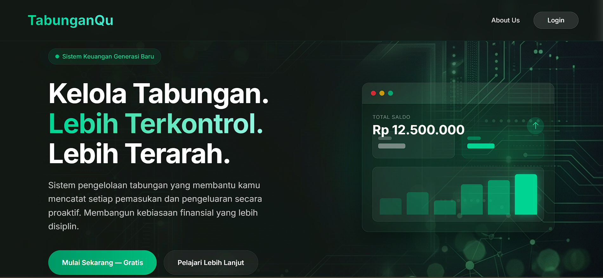
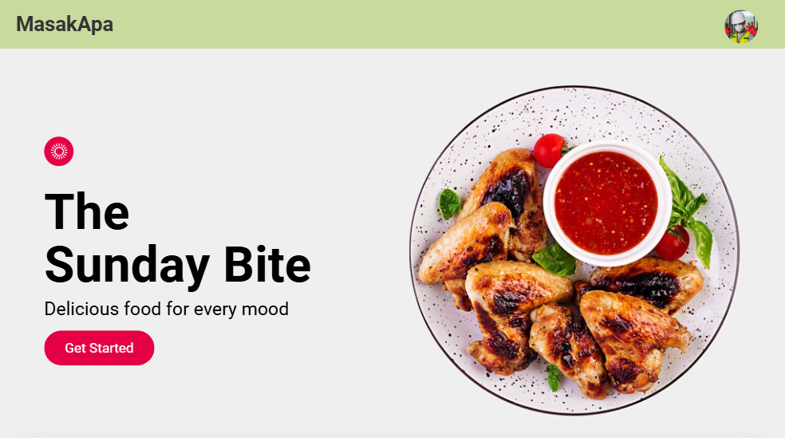
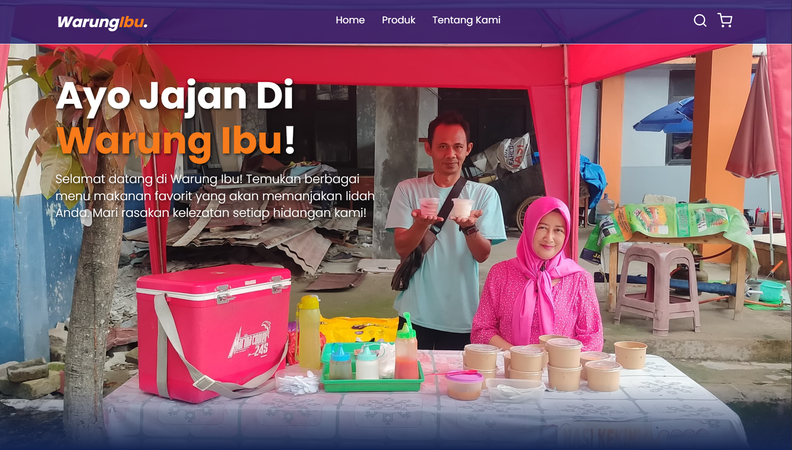

Saya adalah siswa PPLG yang memiliki minat dan semangat di bidang web development. Memiliki kemampuan dalam membangun aplikasi berbasis web serta pengalaman dalam mengerjakan beberapa proyek, saya siap berkembang dan berkontribusi dengan ide kreatif di dunia teknologi.
Teknologi dan stack yang saya gunakan sehari-hari untuk meracik ide menjadi web application yang powerful.
Karya yang merepresentasikan kemampuan Web Development saya.

Aplikasi manajemen keuangan pribadi. Fitur lengkap termasuk auto rupiah formatting, export data, dan dashboard analitik grafis.

Website direktori & database untuk pencarian resep masakan. Menyediakan detail informasi, aktivitas, dan form pendaftaran.

Website e-commerce sederhana untuk pemesanan makanan. Dilengkapi dengan fitur katalog produk, keranjang belanja, dan formulir checkout yang terintegrasi.